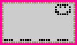

HINTS, TIPS AND FAQs

|
HINTS, TIPS AND FAQs |
|
| Frequently asked questions |  |
What time does my Nano pal go to sleep?
It seems that Nano pals like to go to bed at 9.09 pm, sometimes a couple of minutes earlier than this.
What time do they wake up in the morning?
Er... they wake up before I do! But it would seem that they wake up just after 7, probably at about 7.09am.
Which is food and which is a snack?
This can be a bit confusing, but the rule is that the food is the item on the left, and the snack is the one on the right.
Can I pause the game?
Yes, go into Time Mode and press the square button. While holding it down, press the left arrow button until the time starts to flash. You can either leave it like that until you are ready to reset the time and get the game going again, or you can set the time to about 9.10pm and your Nano will go to sleep for hours. You can then reset the time correctly when you are ready for it to wake up.
How old do they live to?
The oldest I have ever got my Nano Kitty was 36, though I have had reports from people who have got their Nano Kittys and Puppys to live to be much older than this. Well done to these people, who obviously look after their pets extremely well indeed!
How can I tell if my Nano Baby is a boy or a girl?
| It can be hard to tell this at first, but you soon get the hang of it. The best way is to go to the screen with your Baby's name on it, and look at the face in the corner. There is a different face for a boy and for a girl. |
| Hints and Tips |
If you wish to wake up your pal in the night, then discipline it while it is asleep. It will wake up for a while, for you to give it food, or for whatever it was you forgot to do earlier when it was awake.
When playing games with your Nano pal, don't worry too much if you don't win the game. Your pal will still be happy that you played with it, and some of the happy hearts will fill anyway.
You only need to fill up one discipline heart. If you then ensure that your pal is well fed and happy, the rest of the hearts will fill up on their own.
| "Help! My Nano pal won't stop crying!" |
When your pal beeps at you and the attention icon is showing, try the following:-
1) Check the health icon, your pal may need food, games or discipline.
2)Try giving a bath, your pal may want cleaning.
3) Give a snack - too many aren't good for your pal, but the occasional little treat will do no harm.
4) It is possible that your pal needs a booster shot - did you give it medicine 2 or more hours ago? If so, then you need to give a second shot to ensure good health.
| Sometimes, the attention icon will remain on the screen from the time the first dose of medicine was given, until the booster shot has been given. So as long as you have checked that your pal needs nothing else, don't worry as the icon will disappear after you have administered the booster shot. |  |
As your pet gets older, it gets slower (don't we all!) so you may find it is much harder to catch the ball or mouse when playing the chasing game. If this happens, don't worry too much - even if you don't catch the ball or mouse, your pet will still be happy that you played with it, and it's happy score will still go up, just not as much as if you'd won the game.
"Oh no, I've got my Nano wet!"
If this happens, don't panic! Remove the back and take out the batteries. If you have a hairdryer with a cool setting, then you could help it dry out a little with it. Then just leave it to dry for a few days. When it is properly dry, re-insert the batteries and replace the cover, and your Nano should be just fine. If you are very unlucky and get something other than water on it, like sweet coffee, then you may have to be very brave and do as above, but dip it in water first to rinse off anything potentially sticky. I can't promise that this will work though. But always worth a try!
Changing the time
Go into time mode by pressing the circle button. Then press the square button. While holding it down, press one of the arrow buttons until the time starts to flash. Change the time using the left and right arrow buttons, then press the square button again to start the clock. Press the circle button to return to the game mode.
Myths
"Nano pals will wake you up during the night."
This is false - your Nano pal will go to sleep at 9.09pm. If it went to sleep in need of medicine, it may wake up soon after for it's booster shot, but it will go back to sleep very soon afterwards. The only reason they would wake up in the night is if the clock had been set incorrectly.
"When your Nano pal dies, you have to buy a new one."
This is definitely false! I don't know of any virtual pet that this applies to. They have either reset buttons, or reset facilities, so you just start a new pet or pal.
"Nano pals don't change as they get older."
They certainly do! The Kitty grows up into a tiger-like pet, the Puppy into a big dog, and it's very exciting when your Nano Baby cuts it's first teeth and learns to walk!
| Here is a sad picture of what happens when you neglect your pal - this is one sick Nano. |
Please feel free to mail me -
Thanks for visiting!!!
this page last updated on October 20, 1997